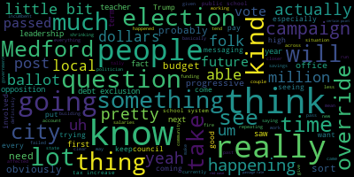

[Leming]: Oh, Matt Leming here. This is the first video slash blog post that I'm doing post-election. So we just had a local election in which ballot questions six, seven, and eight were on the ballot. To recap, this was a question to fund the building of a new fire headquarters, which is question six. Question seven was to put three million dollars towards the Medford public school system to level fund it, and five hundred thousand dollars to the Department of Public Works to let them hire a permanent road repair crew. And question eight was to put an additional four million dollars towards the Medford public school system to invest in things like arts and vocational programs and additional money for teacher salaries, basically things to keep it competitive and improve and invest in the future of the Medford public school system. So the results of the elections came in. Questions 7 and 8 passed and question 6 failed. The margins were pretty narrow. So question 7 passed with, this is the unofficial tally, it's not the official certified tally, but with the unofficial tally it was 14,847 for and 13,304 votes against. Question 8 passed with 14,664 and 13,518 against. And question 6 failed with 13,458 for and 13,965 against. So the ballot questions 7 and 8 passed with about 52% of the vote and question 6 failed about 49 to 51. So obviously I would have liked to see question 6 pass. The fact that the leadership of the firefighter union came out against it was most certainly what killed it. I think that there was probably a corpus of about a thousand voters or so who supported the ballot measures level funding the schools, but decided to go with the leadership of the fire union and kill the funding for the fire headquarters. So I'm not really sure what the future of that project will be. I think that personally, I think that the next ballot, the next debt exclusion that we'll need to see is about is going to be for the new high school. That's coming. That's coming in the future, probably in the next couple of years. And that's really going to need to be the priority. It's a very expensive project. The Massachusetts School Building Authority will likely put a good chunk of funding for it, but the remainder will need to be paid for by the city. And the way that you do that is with a debt exclusion. So these results are pretty unusual, just in the sense that typically it's overrides that fail. You know, I did a lot of combing through the data, combing through the previous override votes that have gone through different municipalities since 1980. They have about a 41% passage rate overall, and during presidential election years, in the November general election, they have about a 35% passage rate. So this was pretty unusual, all things considered. It was really stacked against it, especially since this is Medford's first time having an override. Debt exclusions actually have closer to an 89% passage rate. And that's interesting, I don't actually know why that is. I think it's because when voters are looking at something on the ballot, like a building is something that you can physically imagine is going to be there, and debt exclusions are also temporary, so that's slightly more appealing. Typically, whereas with overrides, you know, when you're talking about things like teacher, teacher salaries, staff salaries, operating budgets, it's less tangible, it's something people can't really see. We were getting a lot of people commenting saying, you know, oh, you should be able to balance the budget, you should be able to, you know, work creatively with less, things like that. That's not really something that we can't, you can do after a certain point. If a budget's just shrinking and shrinking over time, especially when it's as small as Medford's, that's something that's really not feasible after a while. The override campaign, the team that was for the overrides passing really made this clear, and I think the messaging was very much like, our tax rates are extremely low, our operating budget is very small, After a certain point if someone is starving, you can't just tell them to stop starving and then give them less food You need to actually give them food in order for them to survive and get better and that's something that That's really the situation that Medford was in Obviously, you know, obviously the votes were the vote was closer than I think most of us were expecting We didn't see You know, I don't think any pollster really was able to effectively account for, you know, the sort of red wave that swept across a nation. Donald Trump was elected to a second term and he won all the swing states. And I think we were also seeing that kind of shift happen within the very local elections. Which, going into it, I had a good feeling that these would pass. I was kind of thinking that it would be more like 60 40. Um, just given what I was seeing, given what folks were telling me at the doors, um, the fact that it was closer to like 52 48 did make me a little bit nervous, but it's also, I think it's, I think it's also, uh, just is really a Testament to the strength of the organizing team. Uh, the fact that we were able to, um, you know, the fact that, There were so many parents and so many people who wanted to see an investment in their children's future, who were willing to put in so much of their time into this, and just really come up with a more positive message than what we were seeing otherwise. Talking about The opposition is a little bit tricky because I didn't want to do that so much during the campaign. Just kind of giving air to the opposition's platform was usually just not good practice. I feel like now that everything is passed and we know what the vote totals are, I have a little bit more leeway to do that. But it was something that we were dealing with pretty consistently, so Like, I think what the opposition was going for was just a very targeted misinformation campaign. You know, and this was that ended up undercutting them in the long term, because it worked with some of the population, like some of the electorate, but others just ended up realizing that they were being lied to very consistently. And I think there's a lot of smaller instances of this happening. For instance, their mailer said that it was a $37.5 million tax increase, which It is, if you use crazy math, the actual increase would have been about $9.5 million a year. The $37.5 million number is not anything that actually exists in reality. There's also the whole free cash thing that they just kept repeating, which is basically they're saying that we don't actually have to have this tax increase, we could just pay for an override increase through our savings account, which is, again, that's not a thing. You can't just perpetually take money from your savings account, because then you just spend down your savings, and then you're left with zero dollars in the bank, and that's just not a good way to run a city. And this was explained dozens and dozens of times throughout the campaign. We did it in city council meetings. We did it in, uh, you know, I did it in letters to the editor, but it was just something that they just kept repeating, which is, it's a messaging strategy. You know, if you just keep repeating a simple lie, eventually people will believe it. It's propaganda. So I understood, I understood what they were going for. Uh, and I also think that there are legit, there are legitimate reasons to, the override. If you're a senior on fixed income, that is definitely That's definitely a concern. The City Council, we're doing what we can to help people in that situation. So we're passing the maximum exemptions we can. I'm working on a program to give a housing incentive for veterans with a non-profit. But at a certain point, you just can't work with a budget that continuously shrinks due to inflation. It's just eventually every city will need an override and Medford was one of the last to do it so that's just that's just the situation we're in. The opposition campaign, I know something about the leadership of them, just because I pay attention to this. I think they kind of tried to make it an anonymous thing as much as possible, but I was kind of aware of some of the people who were involved in that. It's mainly a combination of former like old guard politicians and former political candidates who just really do not like to see a progressive majority on city council and so they're just kind of this doing everything you possibly can to oppose that because you know obviously they're gonna try to run their own Candidates and they want to weaken the current The people who are currently in office and just kind of make a ruckus around that as much as possible So that's obviously going on and then other people that were also involved in the leadership were of the of the opposition campaign were really just a couple of out-of-town developers and real estate agents who own literally millions of dollars in property like, you know, I looked it up on a I looked it up online a lot of the people like a few of the people that are Listed as being on leadership of the override campaign on literally millions of dollars in property. They just don't want to see it taxed. So There's I there was lip service kind of being paid to you know, some of the fixed income folk that were that are going to be affected by this but the people that were designing the messaging I don't think I I don't think they honestly cared about that. I think that they really just want to, they're really just trying to find a pretense to oppose the people who are currently in office at all costs. So yeah, my opinions on that are a little bit... are a little bit complicated because I do have like I do understand that anytime you come up with a tax increase it's not going to be It's not going to be kind of an ideal Sort of trade-off like you know you are people are going to be affected by it But on the other hand long term you just can't have a city budget that keeps shrinking And you can't just lay off 40 teachers and allow cuts to keep happening to our educational system. That's not a that's not a way to run a city, and nobody else was actually proposing a clear solution to this that we didn't refute 2,400 times. And so yeah, I think that Basically the messaging of the pro campaign was just a lot better We were Generally working a lot harder We were more successful at fundraising And the odds just statistically the odds are really stacked against this happening, you know again, you had a huge red wave go across like coming across the country and And Yeah, that generally means that when that happens, that there will be more people that are opposed to any tax increases happening. But I'm personally relieved that this happened, just because it means that we won't have to lay off a lot of teachers next year, and we actually will be able to see more investment in the public school system. Yeah, moving, so moving forward, what I also learned was that, you know, just running these local campaigns can be, can be a very stressful thing. Like I was just putting a lot of my personal time into that. I hope that the next time that I have to do this, it won't be quite so, quite as much of an intensive process. I guess the first time we would ever try to pass these ballot measures, you know, you're trying something new, it would be, it'll be difficult. But again, we are likely going to have to have a debt exclusion for the high school in the future. The people currently in office and who are working on coming up with the plans for that high school made that very clear. So yeah. But yeah, so other things happening. So, you know, obviously, um, the red wave happened, uh, about something. I'd have to look at the exact number. I think something like 20, 25% of Medford, um, voted for, uh, voted for Donald Trump. Massachusetts is like the, uh, the second bluest state only to Vermont. Um, in the country. And just like every other progressive politician, I've been thinking about that. So I consider myself a progressive. I'm also probably more in the moderate category than a lot of other politicians. So I'm the secretary of the Medford Democratic City and Ward Committees as well. Longer term, so, okay. Everybody's trying to come up with their own take on sort of the on sort of the election I think the pollsters were saying that it was 50-50, but you know what we actually saw was again Trump really take everything like take all of the take most of the battleground states. I mean I'm more convinced that this was a Just a an effect of a very bad post-COVID economy that affected most incumbent administrations. So there's a YouTuber who I linked to in my blog post who talked about the best and worst post-election takes, and I tended to agree with him. He came up with two post-election takes on what happened that I thought were reasonable. The first was just that pretty much every incumbent government globally lost re-election this past year. The UK saw the Labour Party oust the Tory government for the first time since Tony Blair. Meanwhile, every other incumbent government, whether or not they're left or right, has also been kind of following the same pattern. So I tend to take that view on things, which is just that this was a bad time for anybody in office to be kind of holding the ball while inflation was as high as it was. I also think that Given that, you know, Trump's in office again, we're probably going to see a lot of progressive organizing happening. I think there will be a heightened interest in that. From 2016 to 2020, we just saw a ton of that happening, a lot of people started to take an interest in local politics, got really involved in their community, and whenever you have someone who comes in, like, whenever, you know, your party has an office, you get pretty complacent. I think that The progressives on council did see this happening during our terms. I think that when you have progressives have 6 out of 7 seats, then you do tend to get a little bit Then we we have been seeing Folks get a little bit complacent about it. I think that the sort of Contention in this past the local elections that we just saw definitely mobilized a lot of people because they saw like, okay You know, you got folks elected. You can't just kind of Leave them there You need to you know, continue it like show continuing support for the folks that you elect while they're trying to govern and Um, so I, so, you know, I think that it's. You know, again, I'm a Democrat, so I don't really have that much of a positive outlook on where things are gonna be going, but I do think that it will really get people to pay a lot more attention to local politics, and it will get people to pay, to really be encouraged to get involved, and kind of like not be, So yeah, that's my take on what's sort of been happening in Medford over the past couple of months, as well as nationally. I'm probably not able to offer as much insight on the national stuff as some other folks, but I am very proud of the fact that we were able to get these passed. I do, you know, understand that it's a pretty slim margin, so I think that probably reaching out to other folks in the community, especially those without as much computer access in different crowds that we have been engaging would be wise for the future. Seniors, especially, tend to not look at their computers as much. They get more information by word of mouth. So really engaging with that community going forward will be pretty essential. But yeah, so that is my post-election take. Thank you all very much for your continuing support and have a wonderful day.
|
total time: 20.7 minutes total words: 2871  |
|||
{kind=link}